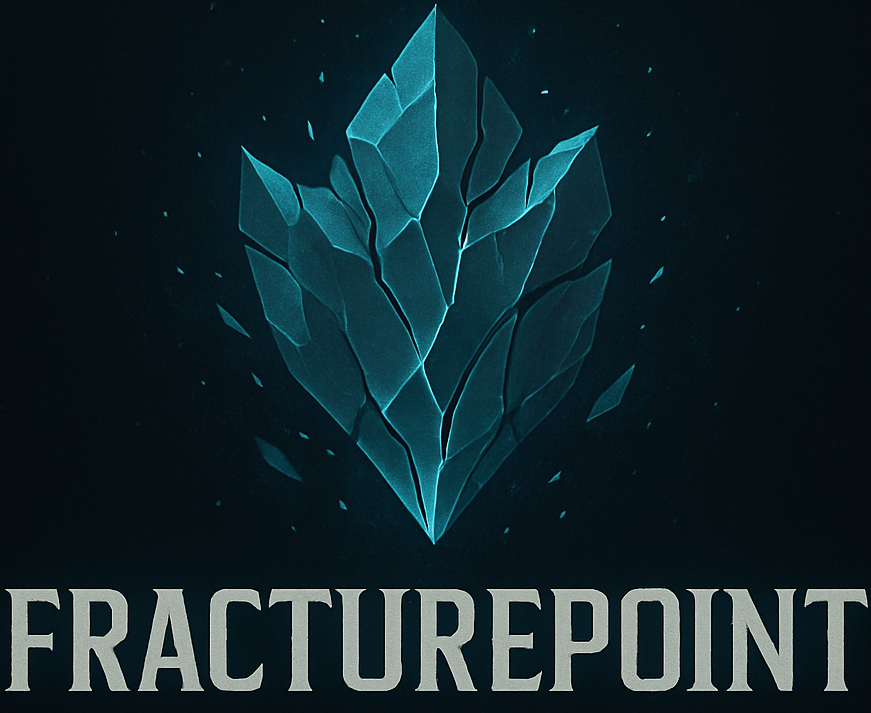

Games I'm Developing!

Fracturepoint
In DevelopmentFracturepoint is a MOBA style game with similar base mechanics to Dota 2 that employs some very unique features! Instead of following suit with other MOBAs, Fracturepoint has a more well 'fractured' way to conrol the game. Your team must be the first one to destroy all three of the enemy team's 'hearts', special crystals stabilizing their side of the map. But beware, because each heart taken gives a buff, but also takes something from you! Will you break the world, or will it break you?
View Details Play / Learn More